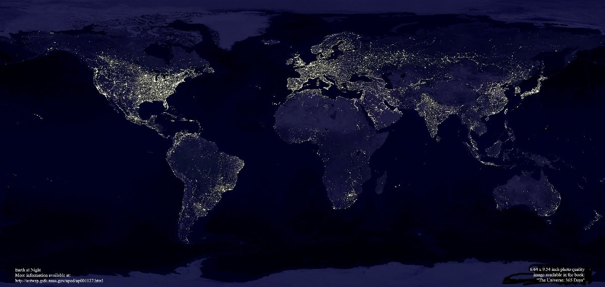
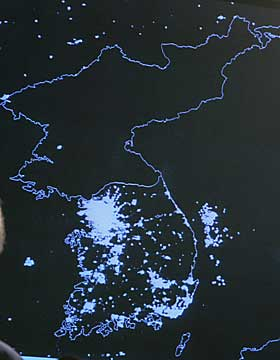

|
Преступно ли сжигать на кострах учёных? И церковь сказала ДА и очистилась от своего греха покаянием. Преступно ли сдерживать социальную энергию масс и направлять её по искусственным каналам реализации замыслов отдельно взятых вождей, отцов нации или утопических идей правящей партии? Да сказали объединённые в ООН народы мира и зафиксировали выстраданную мысль в 1948г., подписав Всеобщую декларацию прав человека. Не могут в современную эпоху вожди, отцы нации или правящие партии создать стабильные социальные конструкции. Социум динамичен и только свободные люди в каждой точке социальной массы творят реальность создают наиболее удобное для себя общество!   Северные и южные корейцы живут по-разному.Я вижу, что Южане поставляют в Россию товары народного потребления, а Северяне, судя по телепередачам, машут цветами и танцуют в честь отца и сына и идей правящей партии трудового народа, под руководством которой они, проявляя трудовой героизм, создают ракеты и ядерные установки. Дай Бог, чтобы всё наладилось. Б.Майоров 17.10.2007: 17 октября - Международный день борьбы за ликвидацию нищеты. |